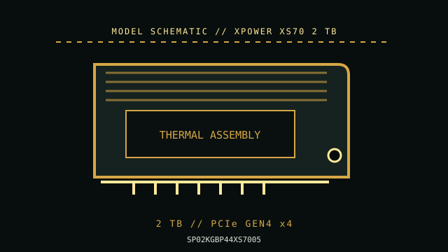

[ PCIE 4.0 NVME DRIVES // IDENTIFIED PRODUCT ]
Silicon Power XPOWER XS70 2 TB (SP02KGBP44XS7005)
2 TB M.2 2280 PCIe Gen4 x4 NVMe 1.4 SSD, identified by Silicon Power model code SP02KGBP44XS7005. Its tall factory heatsink makes this model physically different from a bare module. Performance values are manufacturer-rated maxima, not independent test results.

IDENTIFICATION: Verify the complete MPN, regional suffix, serial/date code and firmware from the drive label. Capacity variants, hardware revisions and cooling bundles can differ; the specifications below are for XPOWER XS70 2 TB where the cited manufacturer documentation identifies them.
Manufacturer-identified specifications
| Product / MPN | Silicon Power XPOWER XS70 2 TB (SP02KGBP44XS7005); manufacturer code SP02KGBP44XS7005. |
|---|---|
| Capacity / form factor | 2 TB; M.2 2280 (22 × 80 mm), single module. Confirm sidedness and surrounding component clearance from the exact revision. |
| Interface / lane width | PCIe 4.0 x4 NVMe; link speed is host-negotiated and can be lower on older hardware. |
| Protocol / flash | NVMe over PCI Express; manufacturer identifies this product as a client M.2 SSD. Use the exact product document for protocol revision, NAND and any DRAM/HMB details. |
| Rated sequential performance | up to 7,300 MB/s read and 6,800 MB/s write. Ratings depend on capacity, firmware, workload and the test conditions published by the manufacturer. |
| Endurance / warranty | Up to 1,400 TBW; 5-year limited warranty, subject to the maker’s current policy. |
| Model generation / thermal package | 2021 product generation. 2 TB, M.2 2280 with model-specific integrated heatsink configuration; verify the exact package before console or board-cover installation. |
Compatibility, installation & service
- Check the actual XS70 heatsink height and length against the M.2 bay; the retail cooling assembly may not fit a thin notebook or a motherboard slot with an integrated cover. Confirm M-key PCIe x4 compatibility, lane sharing, firmware/UEFI boot support, and operating temperature under sustained load. Do not remove the factory heatsink unless Silicon Power’s instructions explicitly allow it.
- Read the motherboard or laptop service manual to check socket keying, supported protocol, PCIe generation/lane count, shared SATA/PCIe lanes, BIOS boot support, standoff position, module sidedness and cover clearance. M.2 is a form factor, not proof that a socket supports NVMe.
- Back up data and retain recovery media and encryption keys before replacement or firmware service. Use only the manufacturer utility/firmware intended for the exact model and capacity; confirm power and system stability during updates.
- Follow the host’s service procedure, shut down and disconnect standby power when instructed, and use electrostatic-discharge precautions. Do not hot-plug a client M.2 SSD unless the platform manual explicitly supports it.
- Monitor SMART health and temperature during sustained transfers. High burst benchmarks do not predict sustained writes, thermals, or service life; keep independent backups regardless of the TBW rating.
Sources & further reading
- Silicon Power XPOWER XS70 NVMe SSD — official product specificationsSilicon Power publishes the capacity and model performance ratings; NVMe documentation defines protocol interoperability.
- NVM Express — specifications and technical documentationTechnical reference for the listed model or the NVMe storage interface; confirm current revision and regional SKU notes with the manufacturer before service.
Rated figures are not guarantees of sustained throughput in every host. Check the current manufacturer datasheet, installation guidance and warranty terms before deployment.